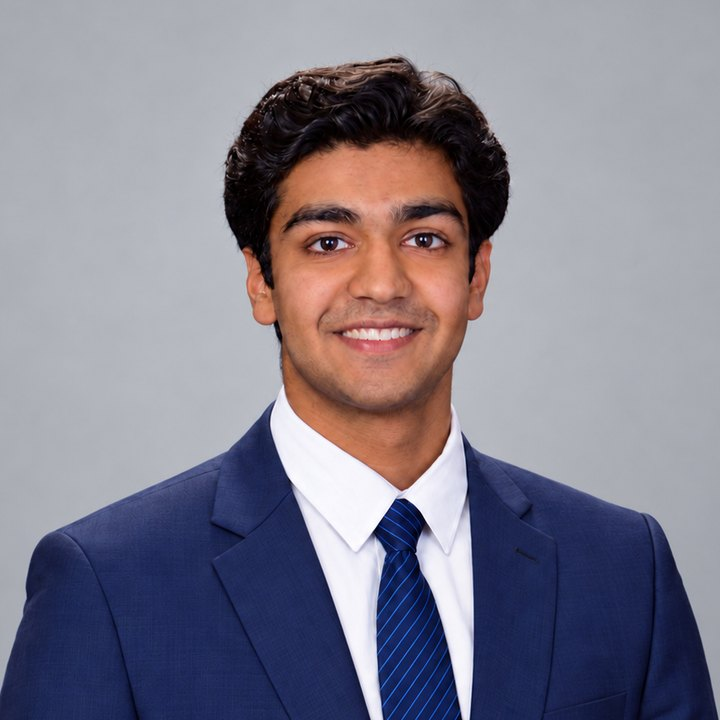

I build where AI meets hardware, power, and capital.
About
I'm Maanas, an engineer and researcher finishing my BS/MS in Electrical Engineering and Artificial Intelligence at the University of Pennsylvania. I spent most of 2026 at Apple as an AI/ML hardware engineer, building an AI tool that automates power delivery design for Mac circuit boards, work that earned a Best Paper Award at Apple's Modeling & Simulation Conference. Today I work with Prof. Le Xie's lab at Harvard and Prof. Benjamin Lee at Penn on scheduling AI data centers around curtailed solar. Before that, I built agentic AI tools for circuit simulation with Prof. Xie's Power & Agentic AI initiative in 2025, and spent three summers at MIT LIGO as a machine learning and hardware engineer on gravitational-wave physics research.
I like building systems, and I'm drawn to problems where logic and systems thinking can make something work better. My philosophy is to use that work to reduce human suffering, improve quality of life, and protect the resources we depend on, and to leave the world better than I found it. That draws me to AI infrastructure, where compute, memory, and power hold some of the hardest engineering problems and the largest capital decisions, and to using optimization and AI to design hardware. I'm interested in both building it and investing in it.
Outside of work, I like to lift, play basketball and cricket, and enjoy a good game of poker. I grew up in Boston and I'm now based in Menlo Park, California. I speak English and Hindi, and I'm learning Telugu and French.
Experience
AI/ML Hardware Engineer Intern, Apple
Built an AI tool that automates power delivery design for Mac circuit boards, with circuit simulation running inside the design loop. A process that took about three months now takes under an hour.
Researcher, Prof. Xie Lab, Harvard University
Team member on the Power & Agentic AI Initiative. Collaborated on MCP servers and multi-agent LangGraph orchestration that automate circuit simulation.
Hardware Engineer Intern, MIT LIGO
Designed a 12-channel analog filter and switching network for LIGO's piezo motor controls, from Altium schematics and PCB layout to microcontroller firmware.
Machine Learning Engineer Intern, MIT LIGO
Developed a parameter-splitting architecture for gravitational-wave parameter estimation, with separate normalizing flows for intrinsic and extrinsic parameters.
Machine Learning Engineer Intern, MIT LIGO
Used self-supervised learning to teach normalizing flows the time-shift symmetry of gravitational-wave signals. The work became a NeurIPS 2023 paper I co-authored.
BS/MS Student, University of Pennsylvania
BSE and MSE in Electrical Engineering, Artificial Intelligence. Courses include analog integrated circuit design, hardware/software co-design for machine learning, embedded systems, and time-series machine learning. I'm involved with the Physics Society and the Wharton Finance and Aerospace clubs. I've also served as an ML research assistant at xLab and a teaching assistant for Electromagnetics.
Projects
Reports and code for all public projects are on GitHub.
Power and hardware
SolarSprint 2026
A scheduler for a solar- and battery-powered AI data center, building on Prof. Lee's Curtail to Compute study. On real AI job traces, it tripled the work completed over that study's baseline.
Wideband Transimpedance Amplifier 2025
A 45 nm CMOS amplifier for optical receivers, designed and simulated in Cadence, that beat every target spec.
BrakeBright 2025
A smart bike light that senses braking with a motion sensor, brightens automatically, and adjusts to ambient light.
Beat-Frequency Metal Detector 2025
A custom PCB that turns nearby metal into an audible tone, designed, simulated, built, and tested.
EEase 2025
A local AI workbench for electrical engineers that runs LTspice simulations from plain English, solves problems from your own textbooks with citations, and writes lab reports.
AI and machine learning
Robo-Analyst 2026
LLM agents read SEC filings with company names hidden, and a blinded model makes each call. Finding: the LLM still recognized 97% of megacaps.
Dynamic Portfolio Optimization via Forecasted Covariances 2025
An LSTM forecasts how assets move together, and its portfolio beat portfolios built on classical models (Sharpe 0.49 vs −0.07).
MoKE: Mixture of Koopman Experts 2025
Models nonlinear systems that switch between regimes, and stays stable on long predictions where standard methods diverged.
Reproducing HAWQ-V3 2025
Reproduced Hessian-based mixed-precision quantization on ResNet-18: a 41% smaller model for under 1 point of accuracy.
Honors and Publications
Best Paper Award, Apple Modeling & Simulation Conference
For AI-driven power delivery design. I was the only intern recipient
Optimizing Likelihood-free Inference using Self-supervised Neural Symmetry Embeddings
Published at NeurIPS 2023, co-authored research with MIT LIGO
US Physics Olympiad (USAPhO) Semifinalist and Honorable Mention
Top 200 in the US, and the first semifinalist in St. Paul's School history
American Invitational Mathematics Examination (AIME) Qualifier
Score 6
Contact
I'm always happy to talk about AI infrastructure, power, or investing.
- linkedin.com/in/maanas-goel
- GitHub
- github.com/maanasgoel
- maanasg@upenn.edu